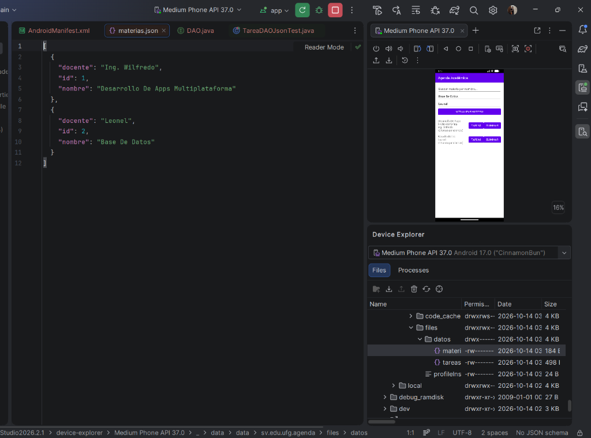
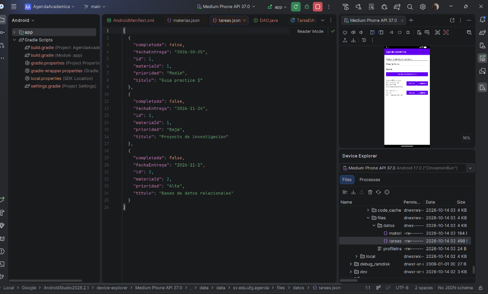
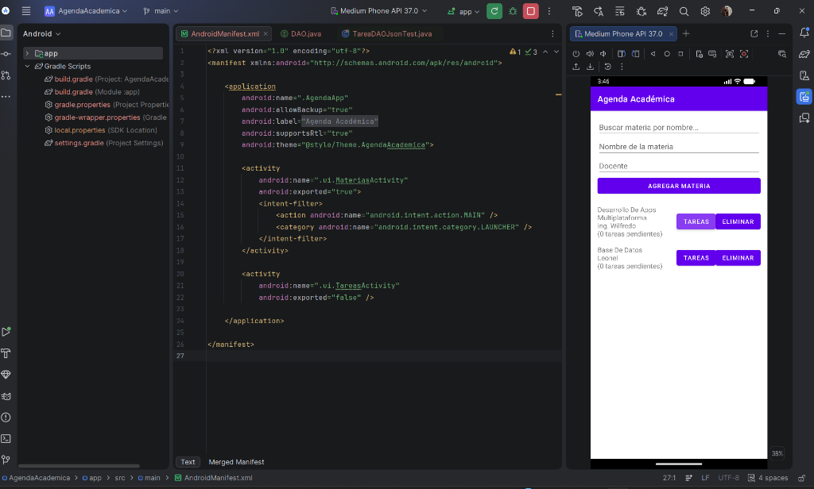
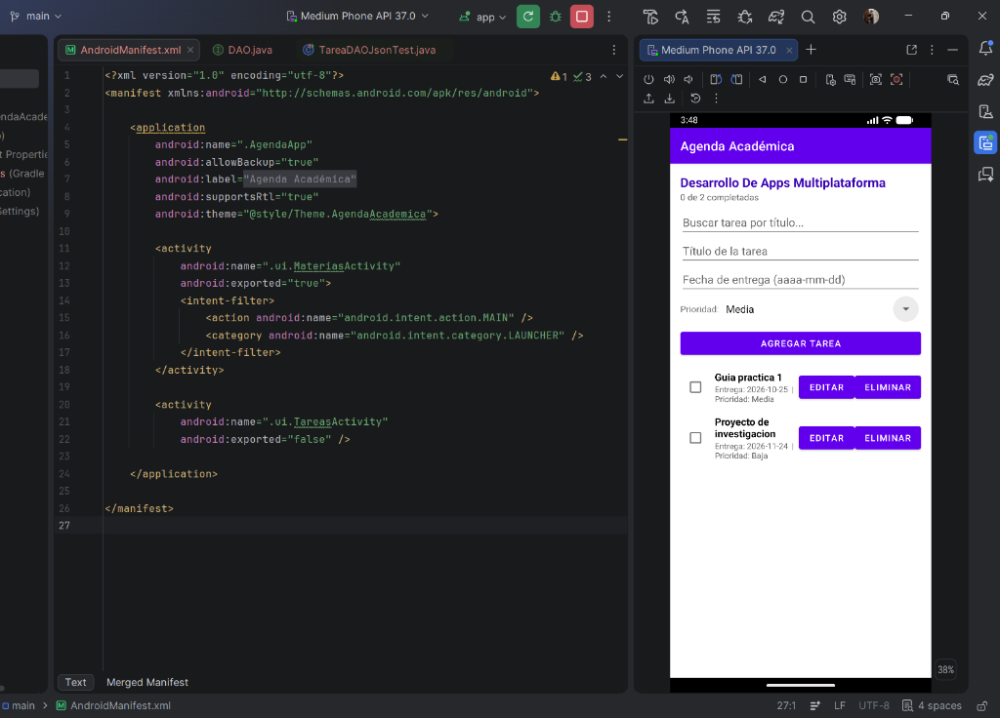
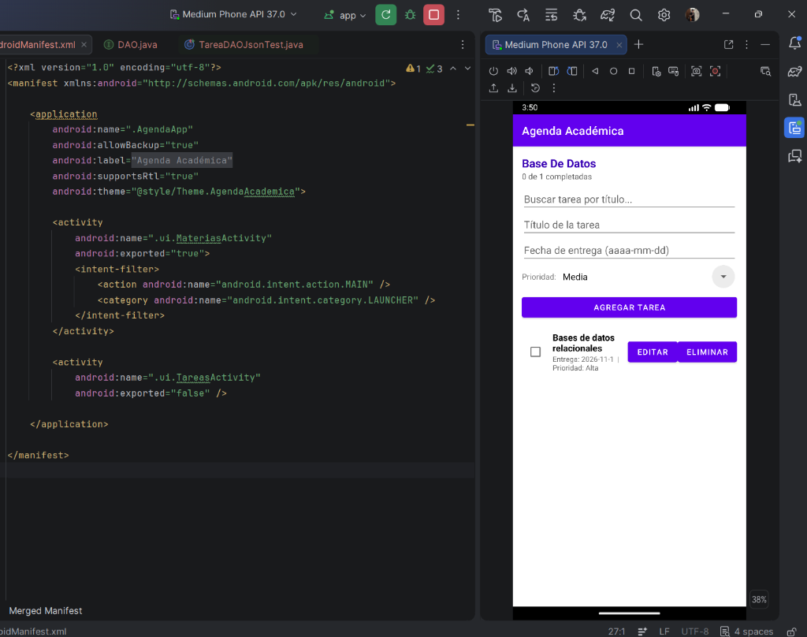

Universidad Francisco Gavidia · Facultad de Ingeniería y Sistemas
Desarrollo de Aplicaciones Multiplataforma (DAP)
Guía Práctica Integrada: Patrón DAO con Archivos JSON
De la Consola (Java 17+ / Maven) a una Aplicación Móvil (Android Java)
San Salvador, El Salvador, Centroamérica · 2026
1. Resumen de la Solución Arquitectónica Integrada
Esta entrega unifica las dos fases de la Guía Práctica Integrada:
primero la implementación del patrón Data Access Object (DAO) con persistencia en archivos JSON en un programa de consola (Parte I),
y luego el escalamiento de ese mismo diseño arquitectónico a una aplicación móvil Android en equipo con entidades relacionadas (Parte II).
La premisa fundamental del patrón se cumple en ambas plataformas: quien usa el DAO desconoce el mecanismo de almacenamiento.
Tanto en la consola como en las pantallas táctiles de Android, los clientes interactúan únicamente mediante contratos (interfaces Java),
mientras que una clase base genérica (JsonDAOBase<T>) y una fábrica (DAOFactory) eliminan la duplicación de código
y centralizan la instanciación.
Principio de Desacoplamiento Comprobado:
Cliente (Main en consola o Activities en móvil) → Interfaces DAO → Clase Base Genérica JsonDAOBase<T> → Almacén JSON
| Aspecto de Comparación |
Parte I: Consola Java (Maven) |
Parte II: Aplicación Móvil Android |
| Ubicación en el Proyecto |
Carpeta dao-json/ |
Módulo app/ |
| Ubicación de los JSON |
Carpeta local datos/ del proyecto |
Almacenamiento interno privado (getFilesDir()/datos/) |
| Entidades |
Estudiante y Curso |
Materia y Tarea (Relación 1 a N) |
| Clase Base Genérica |
JsonDAOBase<T extends Entidad> (Java NIO / Files) |
JsonDAOBase<T extends Entidad> (Java IO / Streams) |
| Instanciación de DAOs |
Fábrica DAOFactory |
DAOFactory mantenida viva en AgendaApp |
| Interfaz de Usuario |
Consola (modo demo y menú interactivo) |
Pantallas táctiles con RecyclerView y TextWatcher |
2. Parte I: Patrón DAO con Archivo JSON en Consola (dao-json)
En el subproyecto de consola se implementaron los Pasos 1 al 6 y todas las actividades de ampliación solicitadas en las páginas 24 y 25:
- Entidad Estudiante ampliada: Incluye el atributo
correo además de id, nombre y carrera.
- Nuevo método de búsqueda:
buscarPorCarrera(String carrera) agregado al contrato y a la implementación.
- Segunda entidad Curso: Modelo con
id, codigo, nombre y uv, con sus correspondientes CursoDAO y CursoDAOJson.
- Reto de reutilización:
JsonDAOBase<T> evita duplicar los métodos cargar(), guardar() y siguienteId() entre entidades.
- Doble modo de ejecución: Modo demostración secuencial y menú interactivo por consola mediante el argumento
--menu.
Ejecución del Programa Principal de Consola (Main.java)
Salida completa de la inserción, búsqueda, actualización, eliminación y persistencia de Estudiantes y Cursos:
=================================================================
DEMOSTRACION PARTE I: PATRON DAO CON ARCHIVO JSON (CONSOLA)
=================================================================
>>> [A] PRUEBAS DE LA ENTIDAD ESTUDIANTE <<<
[1] Insertando estudiantes iniciales...
--- Listado de Estudiantes ---
2 | Luis Pérez | Ingeniería Industrial | luis.perez@ufg.edu.sv
3 | Ana Martínez | Ingeniería en Sistemas | ana.martinez@ufg.edu.sv
4 | Luis Pérez | Ingeniería en Sistemas | luis.perez@ufg.edu.sv
[2] Buscando estudiante con ID 2 y actualizando carrera...
Actualizado: 2 | Luis Pérez | Ingeniería Industrial | luis.perez@ufg.edu.sv
[3] Eliminando estudiante con ID 1...
--- Después de actualizar y eliminar ---
2 | Luis Pérez | Ingeniería Industrial | luis.perez@ufg.edu.sv
3 | Ana Martínez | Ingeniería en Sistemas | ana.martinez@ufg.edu.sv
4 | Luis Pérez | Ingeniería en Sistemas | luis.perez@ufg.edu.sv
[4] Prueba de búsqueda por carrera ('Ingeniería Industrial'):
2 | Luis Pérez | Ingeniería Industrial | luis.perez@ufg.edu.sv
>>> [B] PRUEBAS DE LA SEGUNDA ENTIDAD: CURSO (Actividad Pág. 24) <<<
[1] Insertando cursos iniciales...
--- Listado de Cursos ---
1 | DAP101 | Desarrollo de Aplicaciones Multiplataforma (4 UV)
2 | BD201 | Bases de Datos Avanzadas (4 UV)
3 | RED301 | Redes de Computadoras (3 UV)
[2] Buscando curso con ID 2 y actualizando UV...
Actualizado: 2 | BD201 | Bases de Datos Avanzadas (5 UV)
[3] Eliminando curso con ID 3 ('RED301')...
--- Cursos después de actualizar y eliminar ---
1 | DAP101 | Desarrollo de Aplicaciones Multiplataforma (4 UV)
2 | BD201 | Bases de Datos Avanzadas (5 UV)
[4] Prueba de búsqueda de curso por nombre ('Multiplataforma'):
1 | DAP101 | Desarrollo de Aplicaciones Multiplataforma (4 UV)
=================================================================
Archivos persistidos: 'datos/estudiantes.json' y 'datos/cursos.json'
=================================================================
Archivos JSON Persistidos en la Carpeta datos/
Contenido estructurado en disco demostrando la serialización con Google Gson:
datos/estudiantes.json:
[
{
"id": 2,
"nombre": "Luis Pérez",
"carrera": "Ingeniería Industrial",
"correo": "luis.perez@ufg.edu.sv"
}
]
datos/cursos.json:
[
{
"id": 1,
"codigo": "DAP101",
"nombre": "Desarrollo de Aplicaciones Multiplataforma",
"uv": 4
},
{
"id": 2,
"codigo": "BD201",
"nombre": "Bases de Datos Avanzadas",
"uv": 5
}
]
3. Parte II: Evidencias en Device Explorer (Almacenamiento Móvil)
En Android, los archivos residen en la ruta privada interna del paquete:
/data/data/sv.edu.ufg.agenda/files/datos/. A continuación se presentan las capturas directas del Device Explorer
en Android Studio tras registrar materias y tareas:
Actividad 1: Captura de materias.json en Device Explorer
Ubicación: /data/data/sv.edu.ufg.agenda/files/datos/materias.json · 2 materias registradas con formato sangrado.

[
{
"docente": "Ing. Wilfredo",
"id": 1,
"nombre": "Desarrollo De Apps Multiplataforma"
},
{
"docente": "Leonel",
"id": 2,
"nombre": "Base De Datos"
}
]
Actividad 2: Captura de tareas.json en Device Explorer
Ubicación: /data/data/sv.edu.ufg.agenda/files/datos/tareas.json · 3 tareas pertenecientes a 2 materias distintas con campo prioridad (Actividad 3).

[
{
"completada": false,
"fechaEntrega": "2026-10-25",
"id": 1,
"materiaId": 1,
"prioridad": "Media",
"titulo": "Guia practica 1"
},
{
"completada": false,
"fechaEntrega": "2026-11-24",
"id": 2,
"materiaId": 1,
"prioridad": "Baja",
"titulo": "Proyecto de investigacion"
},
{
"completada": false,
"fechaEntrega": "2026-11-1",
"id": 3,
"materiaId": 2,
"prioridad": "Alta",
"titulo": "Bases de datos relacionales"
}
]
4. Pantallas Funcionales y Validación de Reglas en Android
Pantalla Principal: MateriasActivity
Muestra el formulario superior, el buscador en tiempo real (Actividad 4), la lista con RecyclerView y el resumen de tareas pendientes bajo cada materia (Actividad 5).

Pantalla de Tareas: Materia "Desarrollo De Apps Multiplataforma"
Encabezado dinámico "0 de 2 completadas", buscador por título, selector Spinner de prioridad ("Media", "Baja", "Alta"), fecha de entrega y acciones.

Pantalla de Tareas: Materia "Base De Datos"
Segunda materia con la tarea "Bases de datos relacionales" asignada con prioridad "Alta".

Actividad 7: Ejecución Exitosa de Tests Unitarios JUnit (BUILD SUCCESSFUL)
Pruebas unitarias automáticas de TareaDAOJson y MateriaDAOJson con TemporaryFolder ejecutadas en JVM en 28s:
> Task :app:compileDebugJavaWithJavac UP-TO-DATE
> Task :app:compileDebugUnitTestJavaWithJavac UP-TO-DATE
> Task :app:testDebugUnitTest
> Task :app:testReleaseUnitTest
> Task :app:test
BUILD SUCCESSFUL in 28s
38 actionable tasks: 13 executed, 25 up-to-date
5. Justificaciones Técnicas y Preguntas de Cierre
Validación de las 4 Reglas de Negocio en Android
| Regla |
Descripción |
Mecanismo de Control en Código |
| Regla 1 |
Nombre de materia y título de tarea obligatorios. |
Validado con setError() en MateriasActivity y TareasActivity impidiendo el guardado vacío. |
| Regla 2 |
Una tarea solo puede crearse sobre una materia que existe. |
En TareasActivity.onCreate() se valida materiaId; si retorna null, la actividad se cierra con finish(). |
| Regla 3 |
No se puede eliminar una materia con tareas asociadas. |
MateriasActivity.eliminar() consulta previamente tareaDAO.listarPorMateria(id) y bloquea el borrado con un Toast. |
| Regla 4 |
Fecha de entrega válida en formato estricto aaaa-mm-dd. |
SimpleDateFormat.setLenient(false) rechaza fechas irreales en el calendario (ej. 2026-02-30). |
Actividad 5: Resumen por materia (¿En qué capa va el cálculo?)
Decisión de diseño: El cálculo de cuántas tareas pendientes tiene cada materia se realiza en la
capa controladora / UI (MateriasActivity) coordinando las consultas a materiaDAO.listar() y tareaDAO.listarPorMateria(id).
Justificación:
La entidad de dominio Materia debe mantenerse como un objeto plano limpio (POJO) sin dependencias externas ni lógica de acceso a datos.
Por otro lado, MateriaDAO tiene como responsabilidad exclusiva gestionar la persistencia de materias y no debe depender de TareaDAO
(principio de responsabilidad única, SRP). La Activity actúa como mediadora idónea para sintetizar la información y alimentar el MateriaAdapter.
Actividad 6: Reto DAO en memoria (¿En qué situaciones del trabajo en equipo sirve?)
-
Desarrollo paralelo: El integrante de interfaz (Rol C) puede diseñar y depurar pantallas, adaptadores y validaciones
de forma inmediata sin esperar a que el integrante de persistencia (Rol B) termine la lectura y escritura en archivos JSON.
-
Pruebas ágiles y aisladas: Permite validar la interacción visual con datos limpios y predecibles en memoria en cada inicio,
evitando acumulación de archivos residuales o problemas de permisos en disco.
-
Mock para pruebas continuas (CI): Facilita la creación de pruebas automatizadas rápidas sin tocar el sistema de archivos físico.
Pregunta de Reflexión del Cierre (Página 27 de la Guía)
Pregunta: Si mañana la institución exige guardar los datos en una base de datos (SQLite en Android o MySQL con JDBC en consola), ¿cuántas clases tendrías que modificar en tu proyecto de consola y cuántos archivos de la carpeta ui en tu app móvil?
Respuesta:
• En consola: Exactamente UNA sola clase (DAOFactory.java, cambiando la instanciación de los DAOs). El cliente Main permanece intacto.
• En la app móvil: Exactamente CERO (0 archivos de la carpeta ui).
Justificación Técnica:
Tanto en consola como en móvil, las capas consumidoras (Main, MateriasActivity, TareasActivity y adaptadores) fueron programadas
exclusivamente contra las interfaces de contrato (EstudianteDAO, CursoDAO, MateriaDAO, TareaDAO).
Para migrar a SQLite o MySQL basta con crear las nuevas clases DAO (ej. MateriaDAOSqlite) y cambiar la fábrica. La interfaz gráfica ni siquiera se entera de la migración.